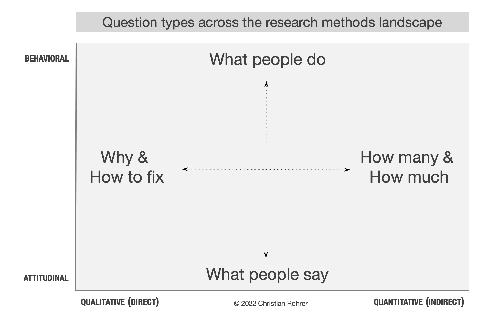

When to Use Which User-Experience Research Methods
Summary: Modern day UX research methods answer a wide range of questions. To know when to use which user research method, each of 20 methods is mapped across 3 dimensions and over time within a typical product-development process.
- TOC
- Three-Dimensional Framework
- The Attitudinal vs. Behavioral Dimension
- The Qualitative vs. Quantitative Dimension
- The Context of Product Use
- Phases of Product Development (the Time Dimension)
- Art or Science?
- 20 UX Methods in Brief
Three-Dimensional Framework
To better understand when to use which method, it is helpful to view them along a 3-dimensional framework with the following axes:
- Attitudinal vs. Behavioral
- Qualitative vs. Quantitative
- Context of Use
The Attitudinal vs. Behavioral Dimension
This distinction can be summed up by contrasting "what people say" versus "what people do" (very often the two are quite different). The purpose of attitudinal research is usually to understand or measure people's stated beliefs, but it is limited by what people are aware of and willing to report.
While most usability studies should rely on behavior, methods that use self-reported information can still be quite useful to designers. For example, card sorting provides insights about users' mental model of an information space and can help determine the best information architecture for your product, application, or website. Surveys measure and categorize attitudes or collect self-reported data that can help track or discover important issues to address. Focus groups tend to be less useful for usability purposes, for a variety of reasons, but can provide a top-of-mind view of what people think about a brand or product concept in a group setting.
On the other end of this dimension, methods that focus mostly on behavior seek to understand "what people do" with the product or service in question. For example A/B testing presents changes to a site's design to random samples of site visitors but attempts to hold all else constant, in order to see the effect of different site-design choices on behavior, while eyetracking seeks to understand how users visually interact with a design or visual stimulus.
Between these two extremes lie the two most popular methods we use: usability studies and field studies. They utilize a mixture of self-reported and behavioral data and can move toward either end of this dimension, though leaning toward the behavioral side is generally recommended.
The Qualitative vs. Quantitative Dimension
The distinction here is an important one and goes well beyond the narrow view of qualitative as in an open-ended survey question. Rather, studies that are qualitative in nature generate data about behaviors or attitudes based on observing or hearing them directly, whereas in quantitative studies, the data about the behavior or attitudes in question are gathered indirectly, through a measurement or an instrument such as a survey or an analytics tool. In field studies and usability testing, for example, researchers directly observe how people use (or do not use) technology to meet their needs or to complete tasks. These observations give them the ability to ask questions, probe on behavior, or possibly even adjust the study protocol to better meet study objectives. Analysis of the data is usually not mathematical.
In contrast, the kind of data collected in quantitative methods is predetermined — it could include task time, success, whether the user has clicked on a given UI element or whether they selected a certain answer to a multiple-choice question. The insights in quantitative methods are typically derived from mathematical analysis, since the instrument of data collection (e.g., survey tool or analytics tool) captures such large amounts of data that are automatically coded numerically.
Due to the nature of their differences, qualitative methods are much better suited for answering questions about why or how to fix a problem, whereas quantitative methods do a much better job answering how many and how much types of questions. Having such numbers helps prioritize resources, for example to focus on issues with the biggest impact. The following chart illustrates how the first two dimensions affect the types of questions that can be asked:
The Context of Product Use
The third distinction has to do with how and whether participants in the study are using the product or service in question. This can be described as:
- Natural or near-natural use of the product
- Scripted use of the product
- Limited in which a limited form of the product is used to study a specific aspect of the user experience
- Not using the product during the study (decontextualized)
When studying natural use of the product, the goal is to minimize interference from the study in order to understand behavior or attitudes as close to reality as possible. This provides greater external validity but less control over what topics you learn about. Many ethnographic field studies attempt to do this, though there are always some observation biases. Intercept surveys and data mining or other analytic techniques are quantitative examples of this.
A scripted study of product usage is done in order to focus the insights on specific product areas, such as a newly redesigned flow. The degree of scripting can vary quite a bit, depending on the study goals. For example, a benchmarking study is usually very tightly scripted, so that it can produce reliable usability metrics by ensuring consistency across participants.
Limited methods use a limited form of a product to study a specific or abstracted aspect of the experience. For example, participatory-design methods allow users to interact with and rearrange design elements that could be part of a product experience, in order discuss how their proposed solutions would meet their needs and why they made certain choices. Concept-testing methods employ an expression of the idea of a product or service that gets at the heart of what it would provide (and not at the details of the experience) in order to understand if users would want or need such a product or service. Card sorting and tree testing focus on how the information architecture is or could be arranged to best make sense to participants and make navigation easier.
Studies where the product is not used are conducted to examine issues that are broader than usage and usability, such as a study of the brand or discovering the aesthetic attributes that participants associate with a specific design style.
Many of the methods in the chart can move along one or more dimensions, and some do so even in the same study, usually to satisfy multiple goals. For example, field studies can focus a little more on what people say (ethnographic interviews) or emphasize studying what they do (extended observations); concept testing, desirability studies, and card sorting have both qualitative and quantitative versions; and eyetracking can be natural or scripted.
Phases of Product Development (the Time Dimension)
Another important distinction to consider when making a choice among research methodologies is the phase of product development and its associated objectives. For example, in the beginning of the product-development process, you are typically more interested in the strategic question of what direction to take the product, so methods at this stage are often generative in nature, because they help generate ideas and answers about which way to go. Once a direction is selected, the design phase begins, so methods in this stage are well-described as formative, because they inform how you can improve the design. After a product has been developed enough to measure it, it can be assessed against earlier versions of itself or competitors, and methods that do this are called summative. This following table describes where many methods map to these stages in time:
| Product-Development Stage | ||
|---|---|---|
| Strategize | Design | Launch & Assess |
| Research goal: Find new directions and opportunities | Research goal: Improve usability of design | Research goal: Measure product performance against itself or its competition |
| Generative research methods | Formative research methods | Summative research methods |
| Example methods | ||
| Field studies, diary studies, interviews, surveys, participatory design, concept testing | Card sorting, tree testing, usability testing, remote testing (moderated and unmoderated) | Usability benchmarking, unmoderated UX testing, A/B testing, clickstream / analytics, surveys |
Art or Science?
While many user-experience research methods have their roots in scientific practice, their aims are not purely scientific and still need to be adjusted to meet stakeholder needs. This is why the characterizations of the methods here are meant as general guidelines, rather than rigid classifications.
In the end, the success of your work will be determined by how much of an impact it has on improving the user experience of the website or product in question. These classifications are meant to help you make the best choice at the right time.
20 UX Methods in Brief
Here’s a short description of the user research methods shown in the above chart:
Usability testing (aka usability-lab studies): Participants are brought into a lab, one-on-one with a researcher, and given a set of scenarios that lead to tasks and usage of specific interest within a product or service.
Field studies: Researchers study participants in their own environment (work or home), where they would most likely encounter the product or service being used in the most realistic or natural environment.
Contextual inquiry: Researchers and participants collaborate together in the participants own environment to inquire about and observe the nature of the tasks and work at hand. This method is very similar to a field study and was developed to study complex systems and in-depth processes.
Participatory design: Participants are given design elements or creative materials in order to construct their ideal experience in a concrete way that expresses what matters to them most and why.
Focus groups: Groups of 3–12 participants are led through a discussion about a set of topics, giving verbal and written feedback through discussion and exercises.
Interviews: a researcher meets with participants one-on-one to discuss in depth what the participant thinks about the topic in question.
Eyetracking: an eyetracking device is configured to precisely measure where participants look as they perform tasks or interact naturally with websites, applications, physical products, or environments.
Usability benchmarking: tightly scripted usability studies are performed with larger numbers of participants, using precise and predetermined measures of performance, usually with the goal of tracking usability improvements of a product over time or comparing with competitors.
Remote moderated testing: Usability studies are conducted remotely, with the use of tools such as video conferencing, screen-sharing software, and remote-control capabilities.
Unmoderated testing: An automated method that can be used in both quantitative and qualitative studies and that uses a specialized research tool to capture participant behaviors and attitudes, usually by giving participants goals or scenarios to accomplish with a site, app, or prototype. The tool can record a video stream of each user session, and can gather usability metrics such as success rate, task time, and perceived ease of use.
Concept testing: A researcher shares an approximation of a product or service that captures the key essence (the value proposition) of a new concept or product in order to determine if it meets the needs of the target audience. It can be done one-on-one or with larger numbers of participants, and either in person or online.
Diary studies: Participants are using a mechanism (e.g., paper or digital diary, camera, smartphone app) to record and describe aspects of their lives that are relevant to a product or service or simply core to the target audience. Diary studies are typically longitudinal and can be done only for data that is easily recorded by participants.
Customer feedback: Open-ended and/or close-ended information is provided by a self-selected sample of users, often through a feedback link, button, form, or email.
Desirability studies: Participants are offered different visual-design alternatives and are expected to associate each alternative with a set of attributes selected from a closed list. These studies can be both qualitative and quantitative.
Card sorting: A quantitative or qualitative method that asks users to organize items into groups and assign categories to each group. This method helps create or refine the information architecture of a site by exposing users’ mental models.
Tree testing: A quantitative method of testing an information architecture to determine how easy it is to find items in the hierarchy. This method can be conducted on an existing information architecture to benchmark it and then again, after the information architecture is improved with card sorting, to demonstrate improvement.
Analytics: Analyzing data collected from user behavior like clicks, form filling, and other recorded interactions. It requires the site or application to be instrumented properly in advance.
Clickstream analytics: A particular type of analytics that involves analyzing the sequence of pages that users visit as they use a site or software application.
A/B testing (aka multivariate testing, live testing, or bucket testing): A method of scientifically testing different designs on a site by randomly assigning groups of users to interact with each of the different designs and measuring the effect of these assignments on user behavior.
Surveys: A quantitative measure of attitudes through a series of questions, typically more closed-ended than open-ended. A survey that is triggered during the use of a site or application is an intercept survey, often triggered by user behavior. More typically, participants are recruited from an email message or reached through some other channel such as social media.
(Src: https://www.nngroup.com/articles/which-ux-research-methods/)